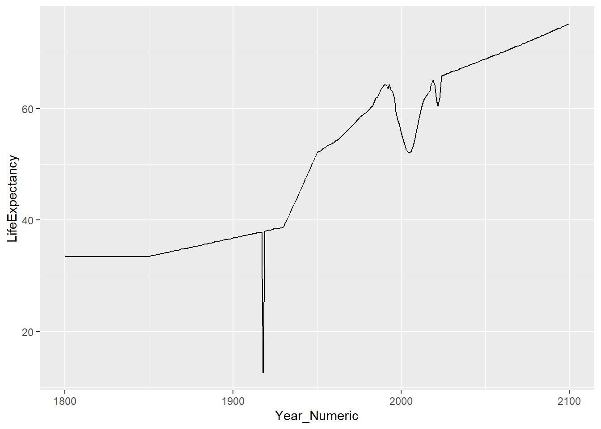

Chapter 8 Life Expectancy and GDP
Install required packages
#install.packages("here")
#install.packages("tidyverse")
#install.packages("rvest")
#install.packages(c("gganimate", "gifski", "av"))
#install.packages("treemapify")Load packages
Load Life expectancy data
Make a line graph of life expectancy for South Africa
This comes in wide-format data
## # A tibble: 1 × 302
## country `1800` `1801` `1802` `1803` `1804` `1805` `1806` `1807` `1808` `1809`
## <chr> <dbl> <dbl> <dbl> <dbl> <dbl> <dbl> <dbl> <dbl> <dbl> <dbl>
## 1 South A… 33.5 33.5 33.5 33.5 33.5 33.5 33.5 33.5 33.5 33.5
## # ℹ 291 more variables: `1810` <dbl>, `1811` <dbl>, `1812` <dbl>, `1813` <dbl>,
## # `1814` <dbl>, `1815` <dbl>, `1816` <dbl>, `1817` <dbl>, `1818` <dbl>,
## # `1819` <dbl>, `1820` <dbl>, `1821` <dbl>, `1822` <dbl>, `1823` <dbl>,
## # `1824` <dbl>, `1825` <dbl>, `1826` <dbl>, `1827` <dbl>, `1828` <dbl>,
## # `1829` <dbl>, `1830` <dbl>, `1831` <dbl>, `1832` <dbl>, `1833` <dbl>,
## # `1834` <dbl>, `1835` <dbl>, `1836` <dbl>, `1837` <dbl>, `1838` <dbl>,
## # `1839` <dbl>, `1840` <dbl>, `1841` <dbl>, `1842` <dbl>, `1843` <dbl>, …life_expectancy_sa <- life_expectancy |>
filter(country == "South Africa") |>
pivot_longer(-country,
names_to = "Year",
values_to = "LifeExpectancy") |>
mutate(Year_Numeric = as.numeric(Year))
life_expectancy_sa## # A tibble: 301 × 4
## country Year LifeExpectancy Year_Numeric
## <chr> <chr> <dbl> <dbl>
## 1 South Africa 1800 33.5 1800
## 2 South Africa 1801 33.5 1801
## 3 South Africa 1802 33.5 1802
## 4 South Africa 1803 33.5 1803
## 5 South Africa 1804 33.5 1804
## 6 South Africa 1805 33.5 1805
## 7 South Africa 1806 33.5 1806
## 8 South Africa 1807 33.5 1807
## 9 South Africa 1808 33.5 1808
## 10 South Africa 1809 33.5 1809
## # ℹ 291 more rowsgraph the data

8.1 Make the same graph but for three random countries
## # A tibble: 3 × 1
## country
## <chr>
## 1 Honduras
## 2 Grenada
## 3 Togolife_expectancy_random3 <- life_expectancy |>
filter(country %in% random3$country) |>
pivot_longer(-country,
names_to = "Year",
values_to = "LifeExpectancy") |>
mutate(Year_Numeric = as.numeric(Year))
life_expectancy_random3## # A tibble: 903 × 4
## country Year LifeExpectancy Year_Numeric
## <chr> <chr> <dbl> <dbl>
## 1 Grenada 1800 31.4 1800
## 2 Grenada 1801 31.4 1801
## 3 Grenada 1802 31.4 1802
## 4 Grenada 1803 31.4 1803
## 5 Grenada 1804 31.4 1804
## 6 Grenada 1805 31.4 1805
## 7 Grenada 1806 31.4 1806
## 8 Grenada 1807 31.4 1807
## 9 Grenada 1808 31.4 1808
## 10 Grenada 1809 31.4 1809
## # ℹ 893 more rowslife_expectancy_random3 |>
ggplot() +
geom_line(aes(x = Year_Numeric, y = LifeExpectancy, color=country))Filter for life expectancy of zero. Did we ever complete this inclass?
life_expectancy <- life_expectancy |>
filter(country %in% random3$country) |>
pivot_longer(-country,
names_to = "Year",
values_to = "LifeExpectancy") |>
mutate(Year_Numeric = as.numeric(Year))
life_expectancy_random3## Rows: 195 Columns: 302
## ── Column specification ─────────────────────────────────────────────
## Delimiter: ","
## chr (199): country, 1901, 1903, 1905, 1906, 1907, 1908, 1909, 1910, 1911, 19...
## dbl (103): 1800, 1801, 1802, 1803, 1804, 1805, 1806, 1807, 1808, 1809, 1810,...
##
## ℹ Use `spec()` to retrieve the full column specification for this data.
## ℹ Specify the column types or set `show_col_types = FALSE` to quiet this message.Look out, there are k’s in the data for 1,000! We should replace k
with 000 and . with nothing.
Check out stringr cheat sheet! Test case for 10k
## [1] NA## [1] 10000Try out the conversion
testconversion <- gdp |>
mutate(`1800` = case_when(
str_detect(`1800`, "k") ~ as.numeric(str_remove(`1800`, "k")) * 1000,
!str_detect(`1800`, "k") ~ as.numeric(`1800`),
str_detect(`1901`, "k") ~ as.numeric(str_remove(`1901`, "k")) * 1000,
!str_detect(`1901`, "k") ~ as.numeric(`1901`)
))## Warning: There was 1 warning in `mutate()`.
## ℹ In argument: `1800 = case_when(...)`.
## Caused by warning:
## ! NAs introduced by coercionOk, what were those NAs about, and can we find a better way to do this compared to copying and pasting code.
Apply a function to many columns simultaneously:
gdp_numeric <- gdp |>
select(-country) |>
mutate_all(~case_when(
str_detect(.x, "k") ~ as.numeric(str_remove(.x, "k")) * 1000,
!str_detect(.x, "k") ~ as.numeric(.x)
)) |>
cbind(country = gdp$country)## Warning: There were 198 warnings in `mutate()`.
## The first warning was:
## ℹ In argument: `1901 = (structure(function (..., .x = ..1, .y = ..2,
## . = ..1) ...`.
## Caused by warning:
## ! NAs introduced by coercion
## ℹ Run `dplyr::last_dplyr_warnings()` to see the 197 remaining
## warnings.Ok, now pivot
gdp_long <- gdp_numeric |>
pivot_longer(-country,
names_to = "Year",
values_to = "GDP_Per_Capita") |>
mutate(Year = as.numeric(Year))And graph
8.1.1 Join the life expectancy data together with income data
gdp_long needs to be combined with life_expectancy
Save the long form of life expectancy
life_expectancy_long <- life_expectancy |>
pivot_longer(-country,
names_to = "Year",
values_to = "LifeExpectancy") |>
mutate(Year = as.numeric(Year)) Now join them!
Graph a specific country and year
life_gdp |>
filter(Year == 2000) |>
ggplot() +
geom_point(aes(x = GDP_Per_Capita, y = LifeExpectancy)) +
scale_x_log10()## Warning: Removed 1 row containing missing values or values outside the scale
## range (`geom_point()`).Load joined data
## Rows: 58695 Columns: 5
## ── Column specification ─────────────────────────────────────────────
## Delimiter: ","
## chr (1): country
## dbl (4): Year, GDP_Per_Capita, LifeExpectancy, Population
##
## ℹ Use `spec()` to retrieve the full column specification for this data.
## ℹ Specify the column types or set `show_col_types = FALSE` to quiet this message.8.3 Web scrape region data
so that we can color the points by region.
Search “country by region plain text”
https://statisticstimes.com/geography/countries-by-continents.php
Save the table to cSV file
Load region table from CSV file
## # A tibble: 249 × 7
## No `Country or Area` `ISO-alpha3 Code` `M49 Code` `Region 1` `Region 2`
## <dbl> <chr> <chr> <dbl> <chr> <chr>
## 1 1 Afghanistan AFG 4 Southern A… <NA>
## 2 2 Åland Islands ALA 248 Northern E… <NA>
## 3 3 Albania ALB 8 Southern E… <NA>
## 4 4 Algeria DZA 12 Northern A… <NA>
## 5 5 American Samoa ASM 16 Polynesia <NA>
## 6 6 Andorra AND 20 Southern E… <NA>
## 7 7 Angola AGO 24 Middle Afr… Sub-Sahar…
## 8 8 Anguilla AIA 660 Caribbean Latin Ame…
## 9 9 Antarctica ATA 10 Antarctica <NA>
## 10 10 Antigua and Barbuda ATG 28 Caribbean Latin Ame…
## # ℹ 239 more rows
## # ℹ 1 more variable: Continent <chr>all_country_data <- pop_gdp_le |>
left_join(
region_data |> select(`Country or Area`, Continent), by = c("country" = "Country or Area"))You can disambiguate functions using ::, e.g. dplyr::select to
specify you want the select function specifically from the dplyr
package
8.4 Life expectancy, GDP and Region
all_country_data |>
filter(Year == 2000) |>
ggplot() +
geom_point(
aes(
x = GDP_Per_Capita,
y = LifeExpectancy,
size = Population,
color = Continent
)
) +
scale_x_log10()
There were some missing continent data!
Let’s inspect data with missing continent data.
## # A tibble: 29 × 6
## country Year GDP_Per_Capita LifeExpectancy Population Continent
## <chr> <dbl> <dbl> <dbl> <dbl> <chr>
## 1 UAE 2000 92400 69.1 3280000 <NA>
## 2 Bolivia 2000 5390 66.5 8590000 <NA>
## 3 Brunei 2000 74300 72.5 334000 <NA>
## 4 Cote d'Ivoire 2000 4000 51.1 16800000 <NA>
## 5 Congo, Dem. Rep. 2000 707 53.9 48600000 <NA>
## 6 Congo, Rep. 2000 4580 53 3130000 <NA>
## 7 Cape Verde 2000 4370 70.3 458000 <NA>
## 8 Czech Republic 2000 24900 75.2 10200000 <NA>
## 9 Micronesia, Fed. St… 2000 3450 62.6 112000 <NA>
## 10 UK 2000 39800 78 58900000 <NA>
## # ℹ 19 more rowsWe are missing a lot of countries because of inconsistent spelling. So, Why not use ISO codes!?!